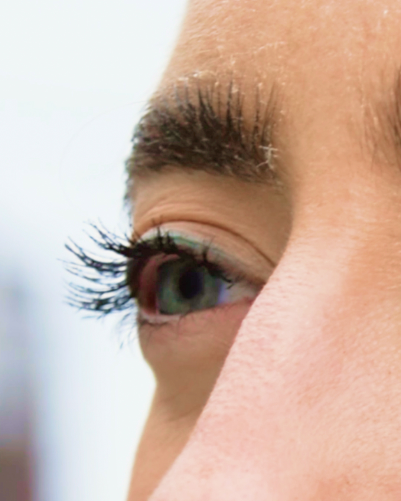
Keep what catches your eye.
Natural hand gestures turn the wearable ring into a way to collect inspiration in the moment.

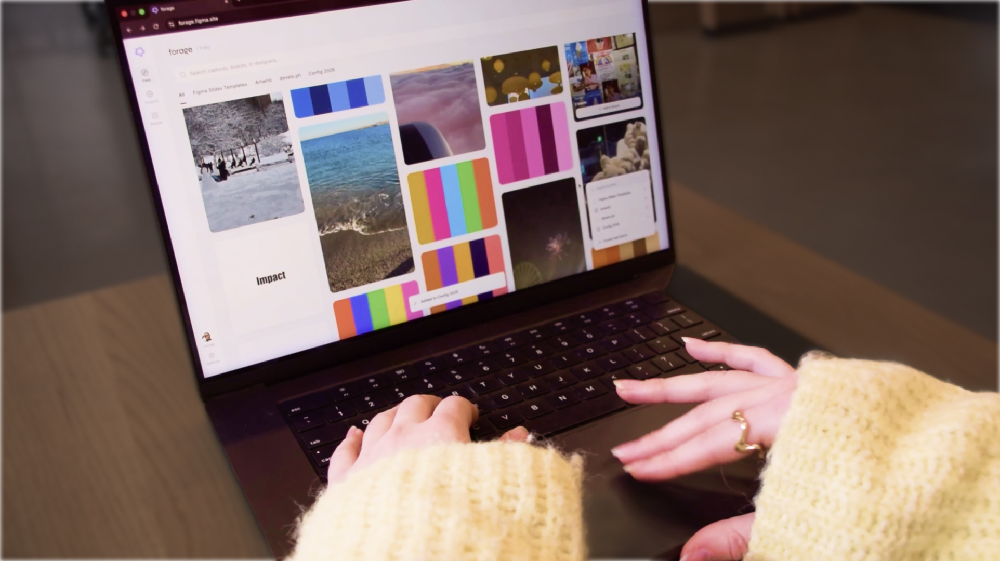
Wearable + AI · FigBuild 2026 · 72 hours

FigBuild challenge
FigBuild is Figma’s student design competition. The 2026 prompt:
“Design a tool that tracks, measures, visualizes or quantifies an aspect of human sensory experience. Within the tool, provide the ability to detect, enhance, or manipulate those same sensory inputs.”
FigBuild 2026 rules, posted by Figma @ Parsons (@figmaatparsons) ↗
Problem
Designers spot usable moments everywhere: a color on a flower, the curve of a ceiling, the motion of a pour, the type on a menu. Inspiration hits mid-movement, too fast to open an app.
What does get saved lands in a camera roll or a screenshots folder, cut off from why it mattered. It’s hard to find again, and harder to reuse.
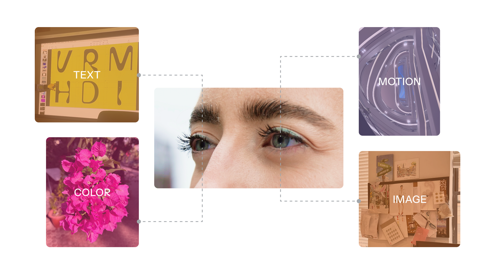
Opportunity
How might we make capturing inspiration feel as natural as noticing it, so it’s still usable when the work starts?
Solution
A wearable ring, creative intelligence, and a connected library keep the moment and make it useful later.

Natural hand gestures turn the wearable ring into a way to collect inspiration in the moment.
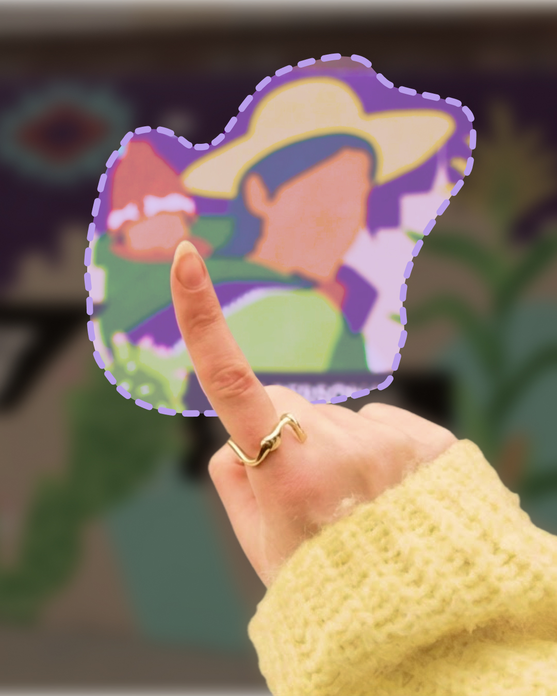
Proposed AI processing identifies what you captured and extracts reusable visual information.
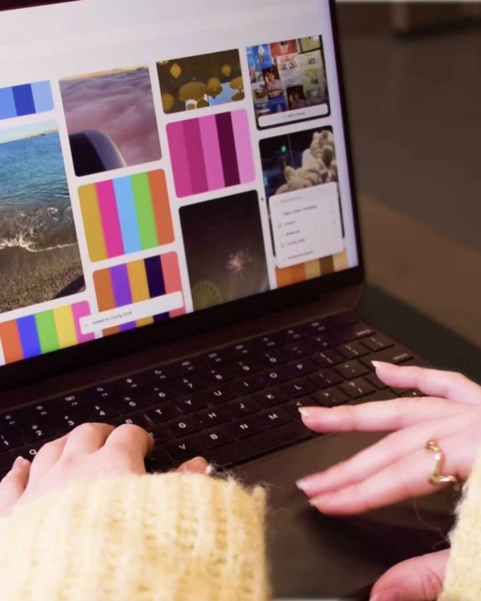
The digital platform brings captures into one library to browse, organize, and discover.
Core Experience
Wear the ring, turn on capture, outline what caught your eye, then choose what to keep. Each capture below shows the gesture, then the asset it becomes in the Field.
Wearable
The ring sits on whichever finger you point with. A sculptural form and a range of finishes make it something you’d wear anyway, with capture always close at hand.

Activate
Double tap the side of the ring to turn capture on. Draw a loose outline in the air around the object, then a second gesture picks the asset type.
Image capture
Outline the poster, then tap once. The capture lands in the Field as an image, cropped to what you outlined and ready to download as a PNG.
PNG
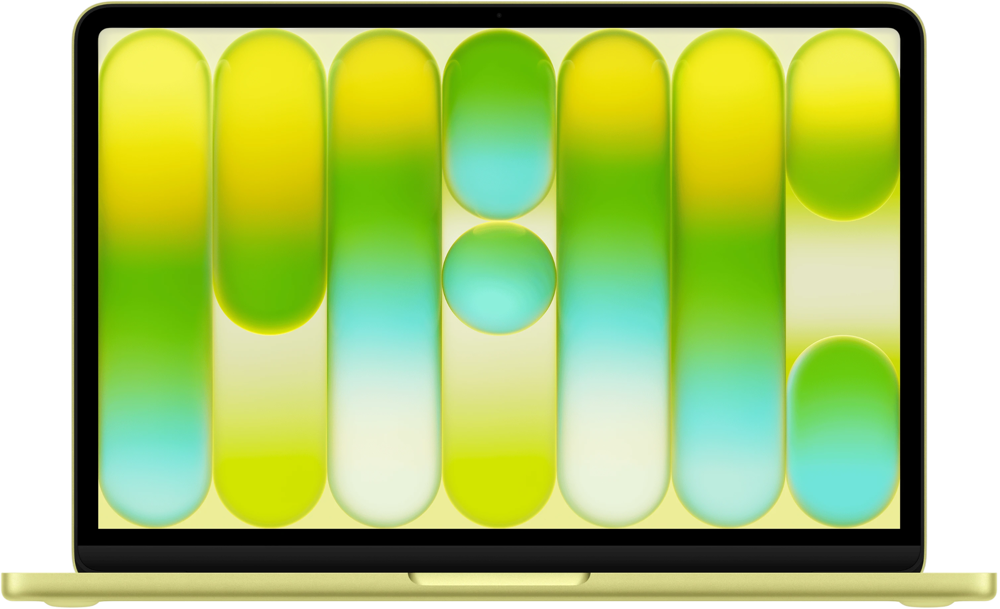
Typography capture
Drag two fingers across the words. forage reads the text and matches the typeface, here Bodoni Poster Compressed, with similar fonts to compare before downloading.
OCR text + font match

Color capture
A two-finger tap keeps the color that caught your attention. The wall becomes a single swatch, #99B0BF, ready to copy into a file.
HEX · #99B0BF
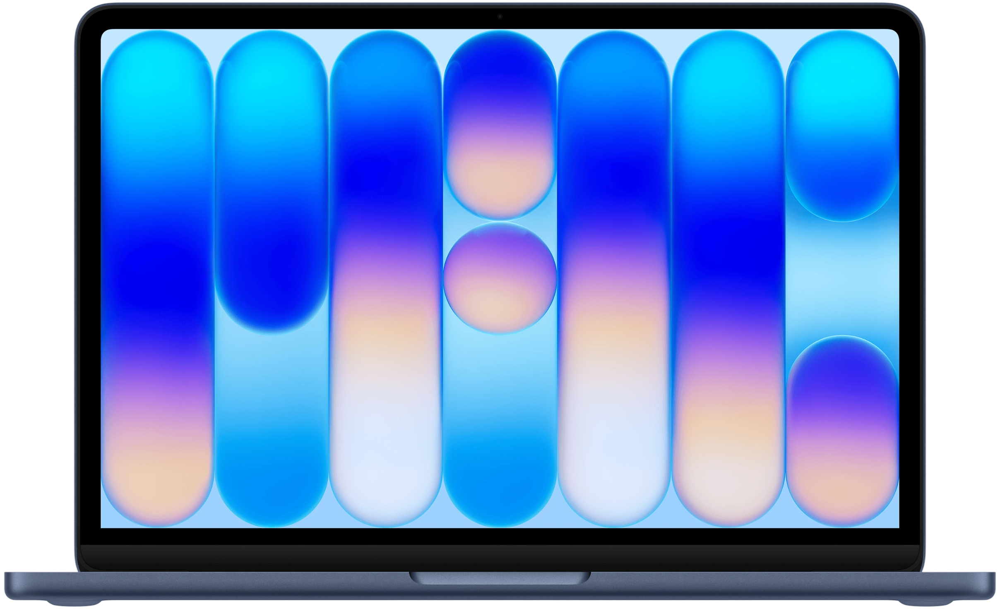
Motion capture
Hold, then drag slightly to record a short movement. The capture keeps the clip, a looping preview, and a timing curve for motion work.
MP4 + GIF preview + timing curve
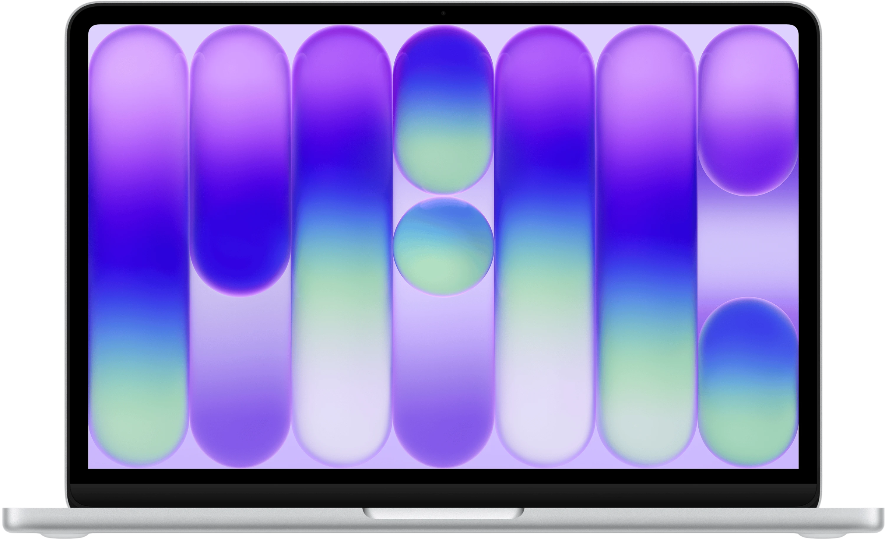
Digital Platform
Collect, organize, and discover: three flows make the wearable’s captures useful over time.
A creative library
The Field is the starting point. Boards give references a purpose, and Explore opens the collection to other designers’ ways of seeing.

Field
Captures arrive in the Field. Filter by image, typography, color, or motion, then open an asset to revisit its details.
Boards
Add a capture to a custom board directly from its card or detail view. Open Boards to return to collections organized by project, theme, or creative direction.
Explore
Browse public boards, follow designers, and save references into your own collections. Popular boards and suggested captures offer new starting points.
Your boards, public collections, and the designers you follow.
Output preferences, profile and board visibility, and the ring’s connection, battery, and calibration controls. Device status is simulated in the prototype.
Interactive prototype
The original Figma Make prototype demonstrates the library flows. Open the original prototype ↗
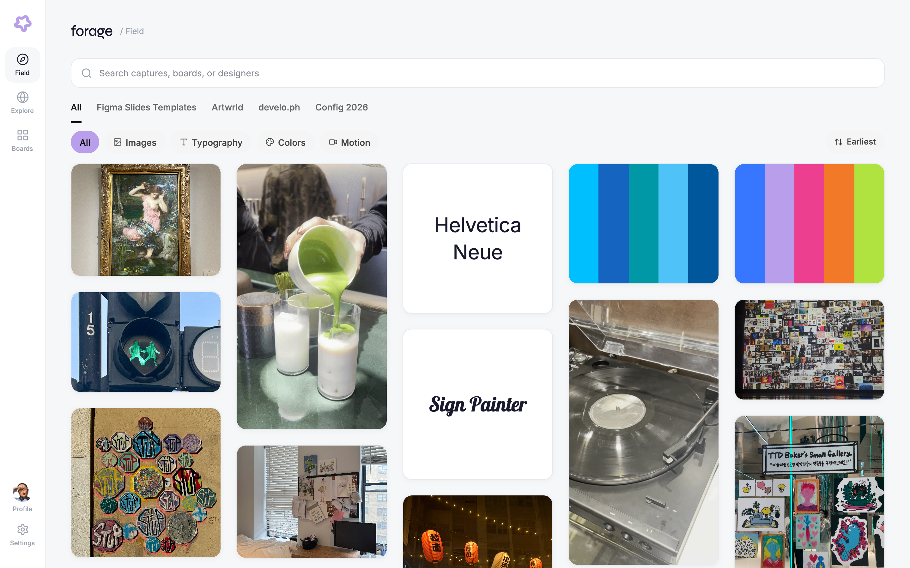
Research
Research helped us decide what to preserve, who to design for, and where capturing should happen.

Validating the problem
Discussions from other designers echoed what we had experienced: disrupted browsing, fragile collections, and saves disconnected from why they mattered. These qualitative signals pointed toward continuity between noticing, collecting, and reusing.
Target user
Our persona notices a texture on a napkin, a color in the sky, type on a storefront, or the motion of a wave. She needs a way to carry those observations into future projects.
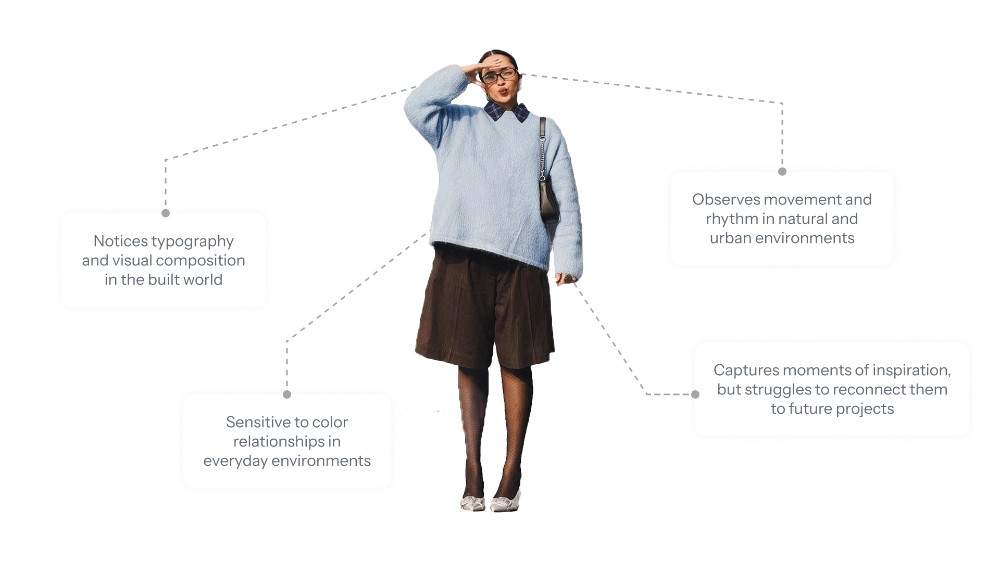
Turn everyday observations into useful creative references.
Notices type, composition, color, and movement while moving through the world.
Inspiration passes quickly; saved moments lose their connection to a project.
A quick capture and a library that preserves context for reuse.
Concept
Inspiration often arrives unbidden. Research on creative inspiration describes it as an evoked motivational state; Carnegie Mellon’s design research explores how external stimuli support associations and idea generation. Our “invisible sense” is a design metaphor for that experience, not an additional biological sense. We connected it to the body through gesture and movement.
Wearable landscape
Fleeting inspiration led us to explore capture that could stay with the body. We compared where existing wearable categories sit, and how they ask people to interact.
 BIOMETRIC RINGS
BIOMETRIC RINGS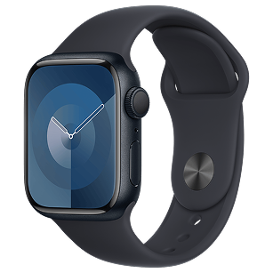
SMARTWATCHES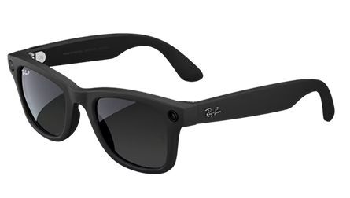
SMART GLASSES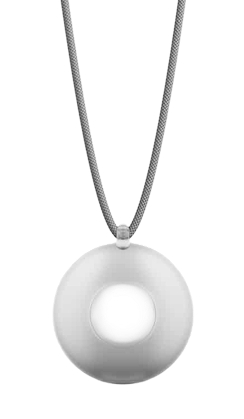
NECKLACES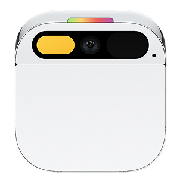
PIN CAMERASGlasses are an intuitive place for visual capture. We chose a ring for a tactile, discreet interaction through the hands, which designers already use to explore, point, and make.
Iterations
Research informed our product requirements: capture vocabulary, output types, and the library’s structure. That gave four people a common target within 72 hours.
Wearable rendering
The form evolved toward jewelry: a softer silhouette, placement that leaves the finger free to move, and finishes that suit different preferences. The renderings explored comfort and wearability; they did not validate a manufactured device.

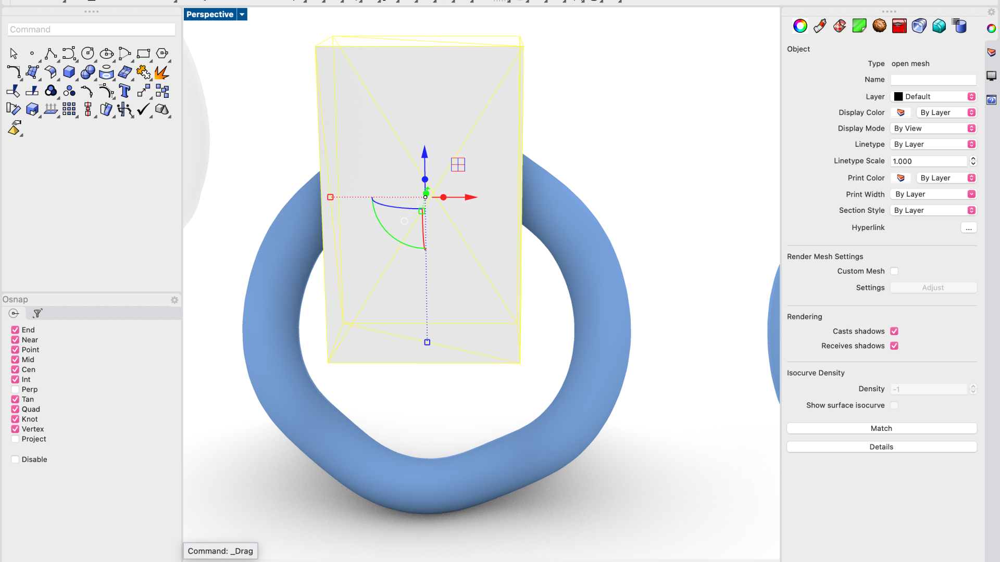

Gesture fine-tuning
We photographed hand poses and acted out alternatives to compare their ease and visual distinction. A shared selection step reduced the vocabulary to four asset choices, instead of a different interaction for every design tool.

Digital product
Figma Make helped turn the shared requirements into a working prototype. We brought captures forward, simplified the navigation, and separated browsing, organizing, and discovery. The interface became a place to return to references, with less attention spent on managing the system.

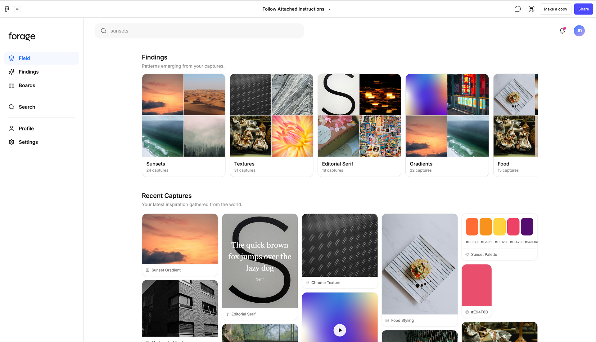
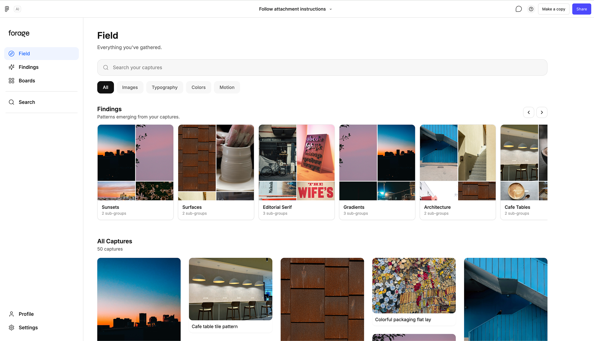
System Design
The ring notices and selects, AI turns the selection into a usable asset, and the library keeps it findable. The ring and the AI pipeline are proposed; the web prototype shows the library.
Wearable hardware concept
The camera sits on top of the band, facing out. Motion sensors and gesture detection read the hand; haptics confirm a save so you never look down. Component selection, battery life, and fabrication were outside the prototype’s scope.

AI creative intelligence · Proposed
Each gesture tells the AI what kind of asset to look for, so it can pull out the part a designer reuses: the subject without its background, the font behind the lettering, the exact color, the easing of a movement. The prototype shows these records; live recognition is proposed.
Privacy was part of the spec: no identifiable faces, capture turns off in sensitive places, and every record stays visible and editable. These are design requirements, not implemented safeguards.
Branding
Kinza and Lucy led the brand direction. Tactile forms and a hand-drawn wordmark made Forage feel personal. The bloom became the app icon; five expressive colors carry it from the ring to the stickers, while the interface gives the references room.
01Wordmark
Clear space = x, the height of the bloom. Hand-drawn; never re-typeset.
03Typography
Syne
Helvetica Neue
Spot. Gather. Create.Capture inspiration the moment it happens.
04Color
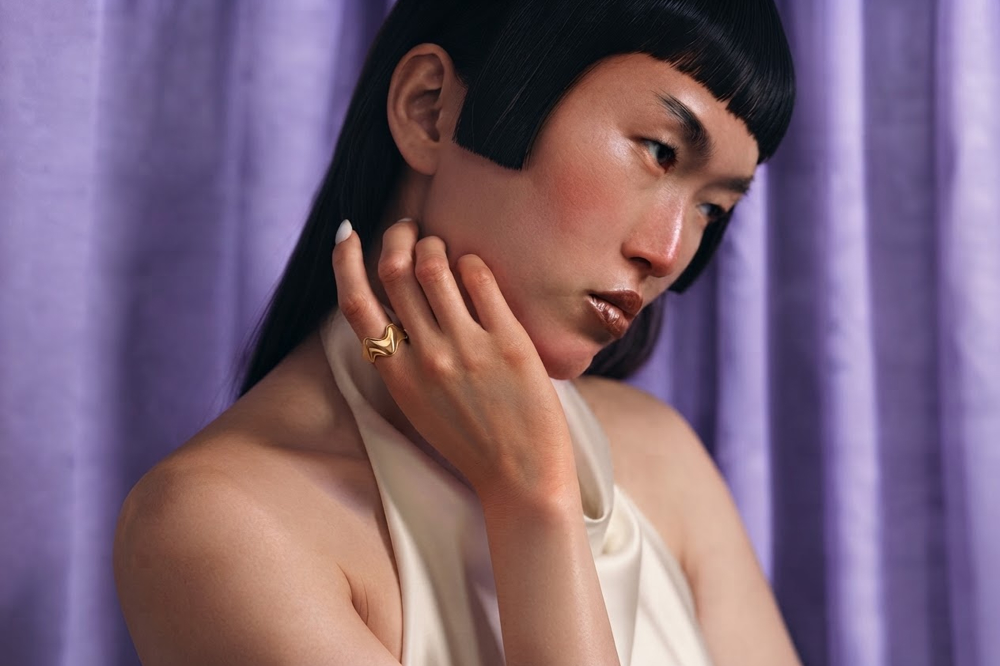
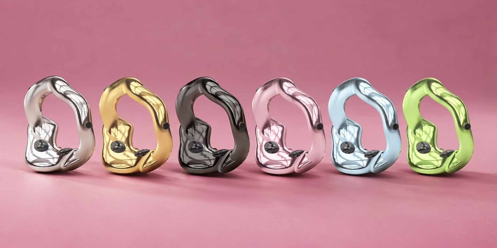


Submission
The FigBuild submission brought the product story, presentation, and interactive prototype together.
Reflection
Designing Forage meant carrying one intention from a hand movement to a reusable asset. The challenge was making that continuity visible within the time we had.
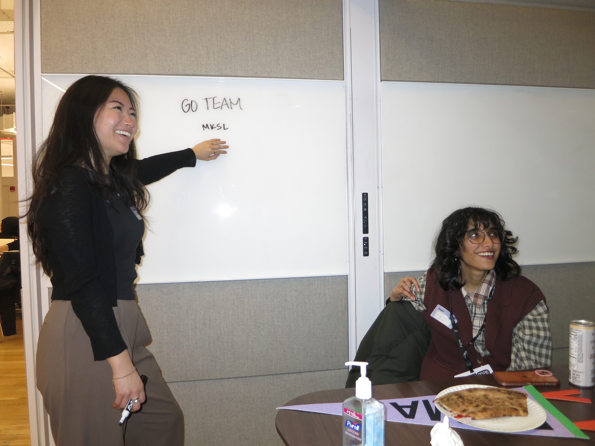

Takeaway · Human behavior
A natural interaction must fit the moment it serves. Capturing a fleeting observation is only useful if the designer can reconnect it to a project later.
Takeaway · Building with AI
A shared vocabulary made an ambitious system demonstrable in 72 hours. Figma Make accelerated the software, while clear boundaries kept the ring concept, simulated outputs, and working flows honest.